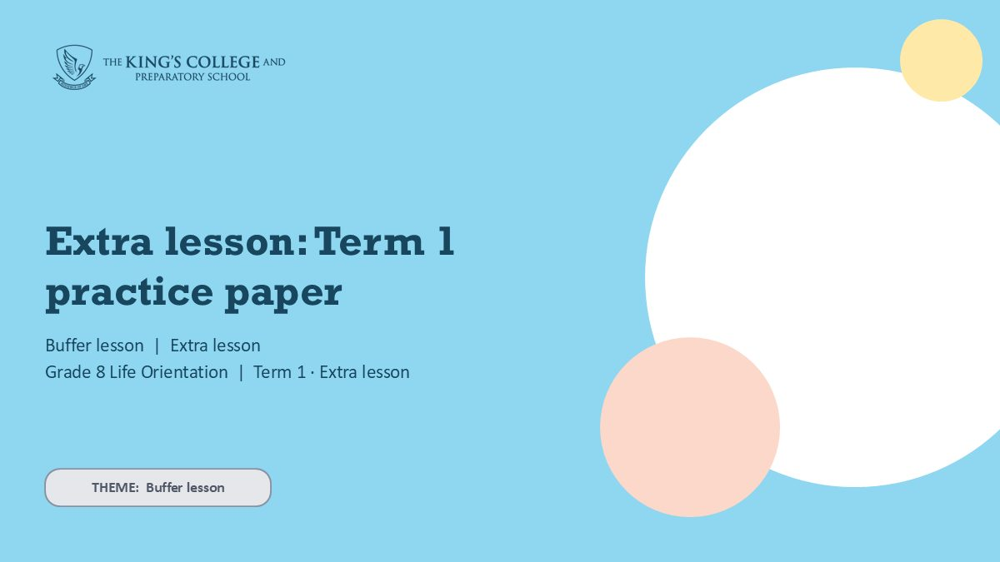

Term 1 · Extra lesson · Extra lesson: practice paper
Extra lesson: Term 1 practice paper
Start here
Today I will
- Practise a short exam paper under time
- Use the building blocks in every answer
- Mark my paper and plan for the exam
Think first
What is the first thing you do when you open an exam paper?
Words to Know
| Word | Meaning |
|---|---|
| Section A | Short questions: multiple choice, terms, true/false. |
| Section B | Questions about a scenario or source. |
| Section C | A longer answer: choose ONE of two questions. |
| Mark allocation | The numbers in brackets that show how many points to give. |
Slides

Notes
Exam tips
- Read first: Read the instructions and every question before you start.
- Watch the time: About 1 minute per mark; don't spend too long on one question.
- Build answers: Statement, reason, result, example.
- Use the source: In Section B, use names and details from the scenario.
Remember
Read, plan, build, check.
Written practice
SECTION A (8 marks)
- A1Choose the correct answer. Write only the letter.
(a) Which task is important but NOT urgent? A A test tomorrow B Starting a project due in three weeks C Answering a WhatsApp D Scrolling social media
(b) Which IDEAL step comes after 'Describe the options'? A Act B Evaluate C Identify D Look back
(c) A person who loves organising information and working with numbers fits which career category? A Artistic B Social C Conventional D Realistic(3 x 1) (3) - A2Give ONE word or term for each description.
(a) Standing up for yourself calmly and respectfully.
(b) The voice in your head that comments on what you do.
(c) A line you set about what is OK and not OK for you.(3 x 1) (3) - A3True or false: 'Peer pressure is always negative.' If false, correct the statement.(1 x 2) (2)
SECTION B (9 marks)
Read the source
Mia's netball teammates invite her to a party on Friday night. Someone says there will be alcohol and vapes. When Mia hesitates, they laugh: 'Everyone is going. Don't be boring!' Mia wants to fit in with her new team, but she knows her parents would not allow it and it goes against her values.
- B1Identify the type of pressure Mia is experiencing.(1 x 1) (1)
- B2Explain why peer pressure can feel so strong for a Grade 8 learner.(1 x 2) (2)
- B3Recommend TWO assertive ways Mia can say no. In each answer, also give the result.(2 x 2) (4)
- B4Explain how her friends Thabo and Aarav could support Mia.(1 x 2) (2)
SECTION C (8 marks): answer ONE question
- C1Analyse TWO ways in which social media can influence the self-concept of a Grade 8 learner.(2 x 4) (8)
- C2OR: Analyse TWO ways in which good time management can help a Grade 8 learner cope with high school.(2 x 4) (8)
Finished early?
Exam practice
Do ONE set of the exam practice bank at the back of your Activity Book.
- Choose the set for the topic you feel least ready for.
- Answer it using the mark allocations.
- Mark it with the exam practice memo on Google Classroom.
- Fill in the STOP box before you start another set.